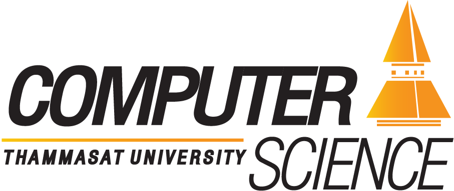

ใครที่ชื่นชอบทางด้านเทคโนโลยีต้องถูกใจหลักสูตรนี้อย่างแน่นอนตอบโจทย์ความต้องการของตลาด ในยุคปัจจุบัน โดยเฉพาะได้เรียนรู้เกี่ยวกับการพัฒนาโปรแกรมและแอปพลิเคชันครบทั้งกระบวนการการออกแบบ และดูแลระบบสารสนเทศ และเครือข่าย เรียนรู้ถึงพื้นฐานของศาสตร์ด้านวิทยาการคอมพิวเตอร์อย่างเข้มข้น เพื่อนำไปต่อยอดเป็นระบบ AI หรือ Data Science กระบวนการซอฟต์แวร์และการพัฒนาการออกแบบ คอมพิวเตอร์กราฟิก ฯลฯ นอกจากนี้ยังมีสายงานใหม่เหมาะกับกลุ่ม Gen Z อย่าง UI/UX ที่ประยุกต์ใช้ความคิดสร้างสรรค์ และหลักการตลาด เพื่อออกแบบระบบหรือผลิตสื่อเทคโนโลยีต่าง ๆ ให้ตรงใจผู้ติดตามทั้งหลาย ทั้งหมดล้วนแล้วแต่เป็นอาชีพที่มีความต้องการสูงมากในทุกวงการ
หลักสูตรที่สอนเกี่ยวกับ ‘คอมพิวเตอร์ประยุกต์’ ที่เน้นเรียนหลักการทางวิทยาการคอมพิวเตอร์แบบกระชับเช่นเดียวกับเอกเทคโนโลยีการเรียนรู้ เพื่อปูพื้นฐานความรู้ โดยเน้นการผลิตบุคลากรทางด้านวิทยาการคอมพิวเตอร์ประยุกต์ที่ตลาดแรงงาน IT ต้องการ ซึ่งจำเป็นต้องมีความพร้อมที่จะปฏิบัติงานได้ทันที โดยจะมีวิชาที่เน้นให้พร้อมสู่การทำงานในภาคอุตสาหกรรม ทั้งหลักการวางแผนและการจัดการซอฟต์แวร์ Tester, Network & System Admin, Data Scientist หรือวิทยาการข้อมูล รวมถึงนักบริหารจัดการสารสนเทศในองค์กร ซึ่งเน้นไปที่การฝึกทักษะในการปฏิบัติงานจริง ผู้เรียนจะมีโอกาสได้ใบประกาศนียบัตรรับรองความสามารถในด้านต่างๆ ให้เป็นที่ยอมรับในสายงานนั้น ๆ อีกด้วย
หลักสูตรนี้ฉีกกรอบวิทยาการคอมพิวเตอร์ โดยเน้นการพัฒนาเทคโนโลยีอัจฉริยะที่สอดรับกับธรรมชาติการเรียนรู้ของมนุษย์ เพื่อสร้างบัณฑิตที่มีทักษะพิเศษในการผสานเทคโนโลยีอัจฉริยะเข้าสู่การเรียนรู้และใช้ชีวิตของคนแต่ละคนได้อย่างมีประสิทธิภาพ หลักสูตรเน้นการพัฒนาฝีมือการวิเคราะห์และแก้ปัญหาด้วยการใช้เครื่องมือระดับเดียวกับมืออาชีพ การฝึกออกแบบและพัฒนาโปรแกรมคอมพิวเตอร์บนเทคโนโลยีสมัยใหม่ เช่น ไอโอที, อุปกรณ์สวมใส่และระบบผสมผสาน ในวิธีที่ส่งเสริมการเรียนรู้ของมนุษย์ได้อย่างเป็นธรรมชาติ